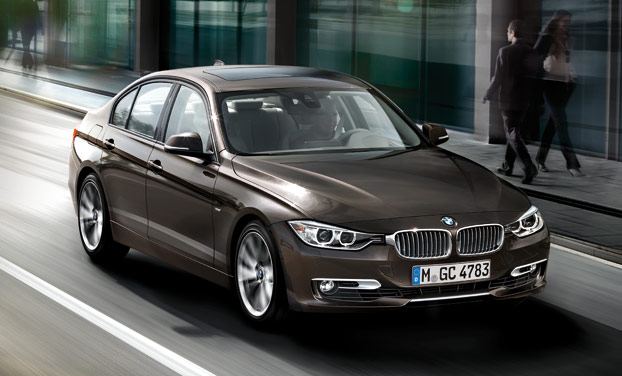

BMW Serie 3 Sedan. (2012)
El nuevo BMW Serie 3 se presenta, por primera vez, con las Líneas Sport, Luxury y Modern. Decídase por uno de estos modelos de carácter expresivo y adapte el vehículo a sus deseos. El nuevo BMW Serie 3 sigue siendo un vehículo de referencia en su sexta generación.o.